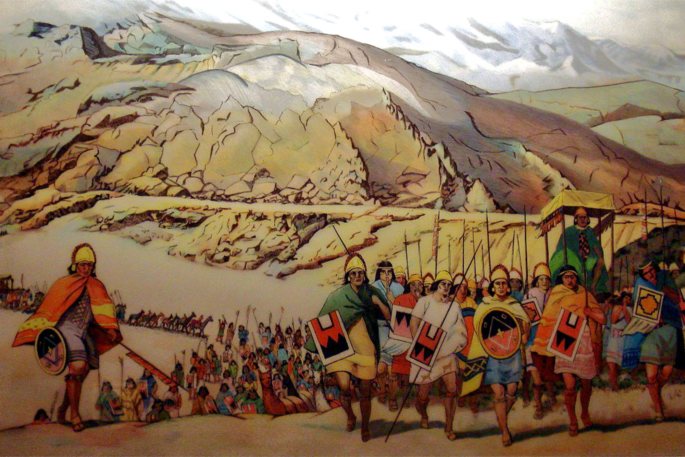
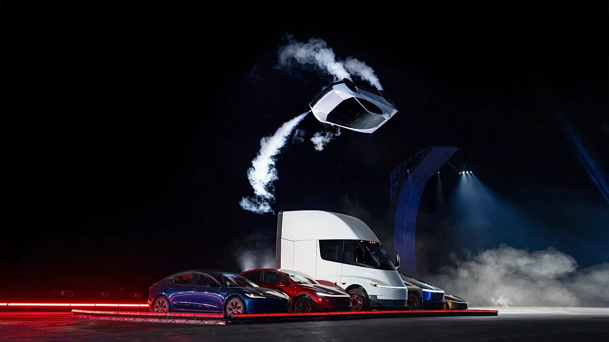
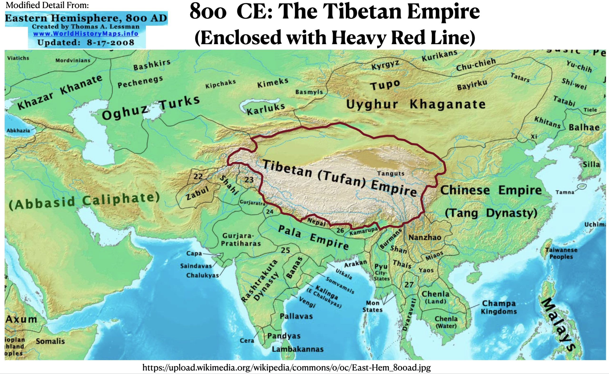

biography
| C# | - | art | - | game modding |
[ English | - | Español | - | Français ]
- programming since 2020
- high school diploma may 2028
- contributing towards collaborative projects since 2021 - terraria modding, games, software,
- artist since 2022
hello, my name is carol (known as 'unboxing' online). i have been programming in C# and many other languages since 2022. i also write and pursue other arts, such as drawing, painting and philosophy.
i enjoy the deeper meaning in life, the deeper meaning in every-day language and the deeper meaning in art in general. everything is of equal importance in life, thus i act accordingly and never deliver subpar work.
as a child the mechanics of software had always interested me, yet i never understood why. while it has been years since then, i have never stopped learning, never stopped looking for art in something as "artless" as programming.
im a normal person, i like to think (and i also like to think). i love life sometimes and i hate life other times. but one thing thats a constant between both states is that i am constantly affected by the world, the society around and within me.
i often times stop and think "wow, i love humanity." i know a lot of people love nature, but i like to consider our technological advancements as part of that nature. because it is what is nature to us, it is what we are raised in and what we see as normal. yes we live in among the trees, wild rabbits and oceans of the world but is there any sense in limiting nature to those only?
i love life because i love humans. i love how ugly we can be to others (yes, but not because of their actions but what it implies about our capabilities), how nice we can be to those we love, and how we are when we are neutral. it is the fact of consciousness and the idea of free will that is associated with humanity that i love so.
i love life because everything dies, because i die. because eventually a new set of people to dominate the world, a new group of animals will rule the forest and because the dictator of a country will never remain in power forever. i dont believe we live to die; because if so, why wouldnt god kill us right as we're born? we're given the chance to socialize with others - meet your family, make friends and love others - and we're given the chance to love ourselves - jobs, school, hobbies. and what i love even more is how everyone else chips in to influence what youll be able to achieve. yes, the system is rigged for some - maybe youre gay and you get harassed at school and jobs dont hire you. but ignoring how obviously terrible that is and how much that needs to change, i think the very fact that humanity can be so cruel and so nice to others - that it chooses what it wants - is some proof of at least a limited free will. maybe free will doesnt exist in the huge universe; but to us, it's more than real, and regardless of if its real or not, we still choose what we want to do. but its fun to debate, so.. we do anyway. because its only human.


